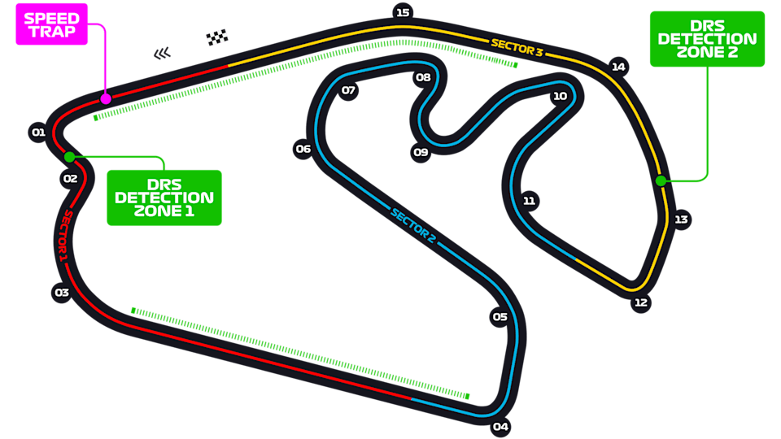
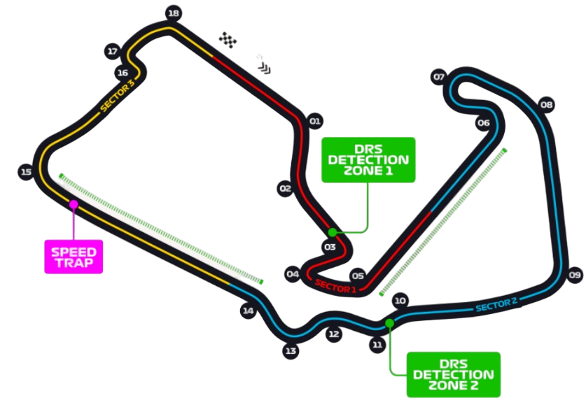
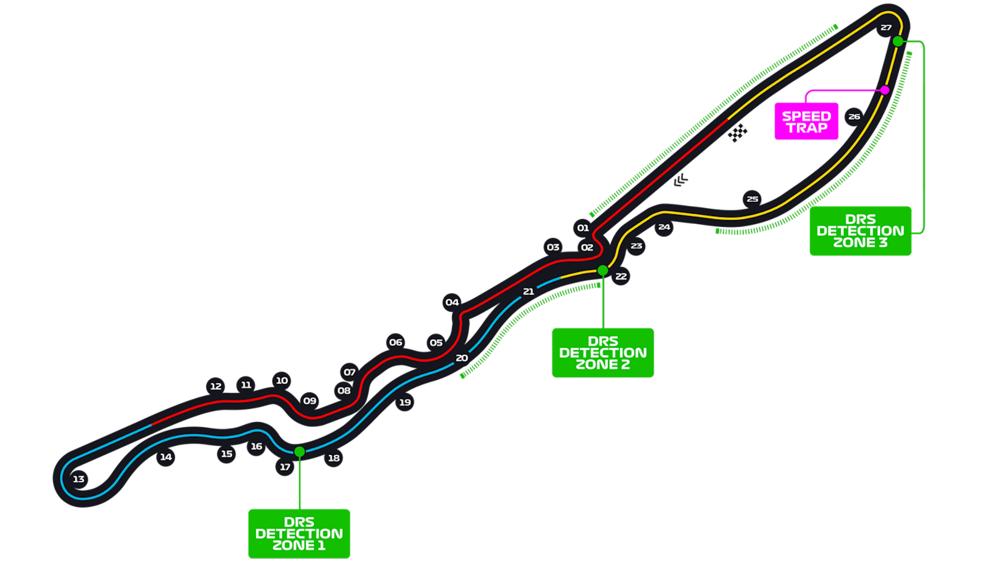
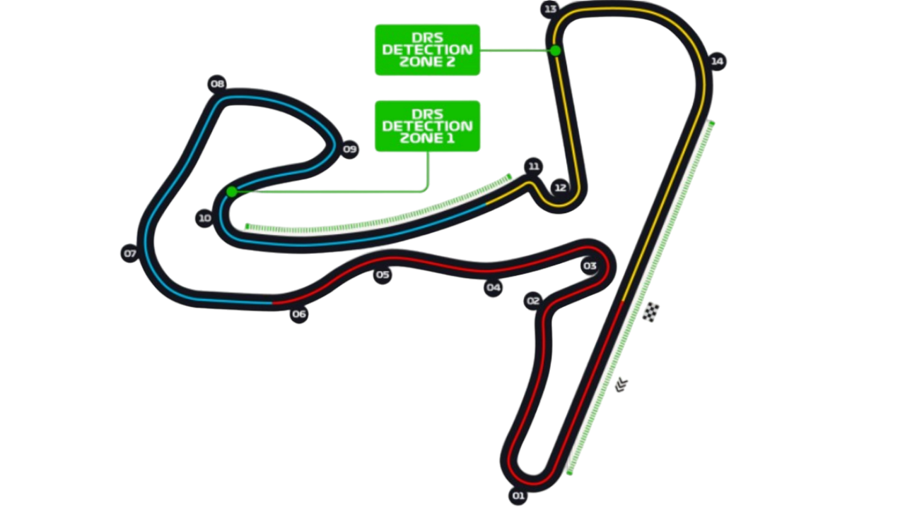
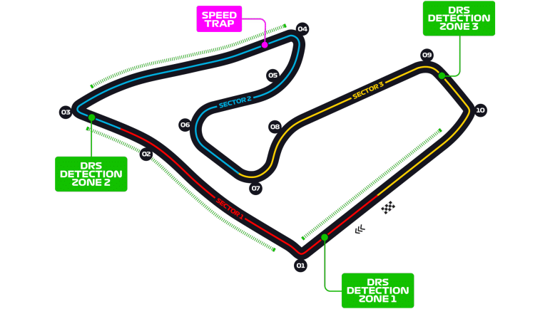
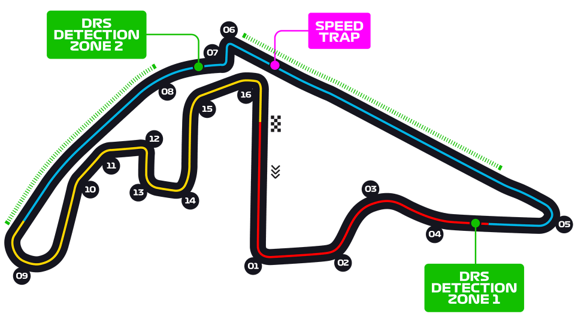
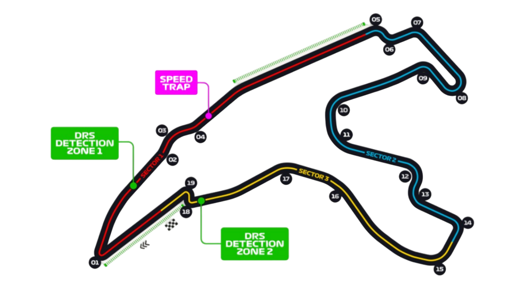
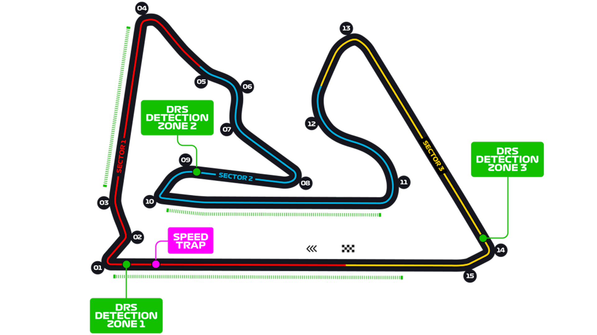

Este circuito se llama "Monza", y para los fans de la formula 1, es el más querido de los italianos.
Longitud de pista: La pista de monza, cuenta con una distancia de 5.7Km Y cuenta con 11 curvas.
El piloto con el mejor tiempo histórico en este circuito es Lewis Hamilton, quien en 2020, logró un tiempo de 1:19.272 durante la calificación para el Gran Premio de Italia de 2020.
Las unicas 2 muertes de pilotos en Monza, fueron de Count Zborowski, en 1923 y la de Jochen Rindt en 1970, mientras se daba la clasificación para el Gran Premio de Italia, en el cual el estaba intentando hacer su mejor tiempo. Ronnie Peterson, por otro lado, sobrevivió a un accidente en carrera, pero falleció horas después en el hospital.
Este es el otro circuito italiano llamado "Imola", y en el último punto puedes ver el por que sobre el favoritismo de Monza
El circuito de Imola, cuenta con 4.9Km además de contar con 19 curvas.
Quién tiene la vuelta más rapida hasta la fecha, es, ni más ni menos que el 7 veces campeón del mundo nuevamente, Lewis Hamilto, con un total de 1:15.48 segundos.
Las muertes que sucedieron en la pista fueron 3. Ayrton Senna, Roland Ratzenberger y Rubens Barrichello de la misma manera, asi son la mayoría, patinadas, fallos en frenos, etc.
México
Este circuito, es el "Autodromo Hermanos Rodriguez", lo entenderas en el último punto.
Longitud de pista: Este circuito mide 4.3Km y contando con 17 curvas.
El piloto con mejor tiempo: En este caso, continúa siendo Lewis Hamilton, con 1:14.758 segundos en 2019.
Hubieron dos fallecimientos en este autódromo, y fue la muerte de los hermanos Rodriguez, Ricardo muere a los 19 un 1962, y su hermano pedro en 1971, ambos en accidentes de pista.
España
El circuito de españa, se llama "Circuito de Barcelona-Catalunya", el cual tiene :
Tiene 4.6Km, cuenta con 16 curvas.
Ya saliendo del dominio de Lewis, el piloto con mejor vuelta dentro de este circuito, es Max Verstappen contando con 1:18.14 segundos.
Hasta la fecha, nadie a muerto en este circuito.
Monaco
El nombre de este circuito es simple, ya que es "Monaco", igual a la ciudad.
Este circuito cuenta con una longitud de 3.337Km, y 78 vueltas.
Y volviendo con el reinado de el ingles, el que se lleva el mejor tiempo en este circuito, vuelve a ser el 7 veces campeón del mundo, Lewis Hamilton.
En este circuito fallecieron 5 pilotos, los cuales son: Alberto Ascari (1955), Paul Hawkins (1965), Luigi Fagioli (1952), Dennis Taylor (1962) y Lorenzo Bandini (1967).
Estados Unidos
Su nombre es "Miami International Autodrome".
Tiene 5.412Km de largo en total, y se corren 57 vueltas.
El record de vuelta rapida, lo lleva Max Verstappen en (2023), con un tiempo de 1:29.708 segundos.
Hasta el dia de hoy, 4 de noviembre de 2024, no se registraron fallecimientos en la formula 1 desntro de este circuito.
Este circuito, siendo el 2do de Estados Unidos, se llama " Las Vegas Strip Circuit".
Cuenta con 6.201 Km, más que su hermano en Miami, pero con 50 vueltas.
El record de la vuelta más veloz, lo tiene uno de los actuales pilotos de mclaren, Oscar Piastri, sucedió el 2023, con un total de 1:35.490 segundos.
Este circuito, tampoco ah tenido fallecimientos ni tragedias, y este patrón se repite por segunda vez en las pistas estadounidenses.
El nombre de este circuito es "Circuit of The Americas".
Su distancia es de 5.513Km y con 56 vueltas.
El record en una vuelta rapida lo tiene el "Principe" de Monaco, Charles Leclerc, con 1:36.169 segundos en (2019).
Este circuito no ah tenido fallecimientos, lo que es interesante, ya que es un dato verídico, poder decir que en toda la historia de la f1, no hubieron fallecidos en los Estados Unidos de America.
Brasil

Este circuito, actualmente se llama, "Autodromo Jose Carlos Pace", pero debido a su historia, se le llama y conoce más como, "Interlagos".
Cuenta con una distancia de 4.309Km y normalmente se corren 71 vueltas.
El piloto con mejor tiempo es Valteri Bottas en 2018, con un tiempo de 1:10.540 segundos.
Los fallecidos en Interlagos, han sido, Carlos Pace (1977), y Ricardo Rodríguez (1971), ambos, como todos los demas, murieron por accidente en pista y como la mayoría, en carrera.
Azerbaiján
El circuito de azerbaijan, se llama baku, uno de los circuitos más esperados en el año, pero también, de los más odiados.
Tiene 6Km, y se corren 51 vueltas.
El piloto con mejor vuelta es Charles Leclerc, en 2019, es un tiempo de 1:43.009 segundos, lo cual se contradice, ya que Leclerc es un meme en esta pista, por siempre chocarse en "la curva del castillo", la más complicada del circuito.
No hubieron fallecimientos, pero si choques ya que es muy angosta y con unas curvas muy cerradas.
Canadá
El circuito en cuestión, se conoce como "Montereal", pero llamado realmente como "Circuit Gilles-Villeneuve".
Tiene 4.361Km de largo, en los cuales se hacen 70 vueltas.
El piloto con mejor tiempo en vuelta rapida, fue Valteri Bottas, con 1:13.078 segundos en 2019.
En este circuito tampoco hubieron fallecimientos.
China
Este circuito es el "Shanghai International Circuit", conocido por su diseño en forma de "Yin-Yang".
Longitud de pista: Tiene una extensión de 5.451Km y se recorren 56 vueltas.
El piloto con mejor tiempo en vuelta rápida es Michael Schumacher, quien en 2004 registró 1:32.238 segundos.
Hasta la fecha, no se han registrado fallecimientos en este circuito, aunque ha sido escenario de emocionantes carreras bajo lluvia intensa.
Japón
El circuito de Japón es el famoso "Suzuka Circuit", conocido por su figura de "8" y sus desafíos técnicos.
Longitud de pista: Cuenta con 5.807Km y un total de 53 vueltas.
El mejor tiempo en vuelta pertenece a Lewis Hamilton con 1:27.064 segundos en 2019.
El circuito ha sido testigo de grandes momentos en la Fórmula 1, pero también de tragedias, como el accidente de Jules Bianchi en 2014.
Australia
En Australia, el "Albert Park Circuit" en Melbourne abre tradicionalmente la temporada de F1.
Longitud de pista: Mide 5.303Km y los pilotos completan 58 vueltas.
El récord de vuelta rápida pertenece a Charles Leclerc, con un tiempo de 1:20.260 en 2022.
El circuito combina secciones urbanas y zonas cerradas, lo que lo convierte en uno de los más interesantes y desafiantes de la temporada.
Reino Unido

"Silverstone Circuit" es el circuito histórico de Gran Bretaña, cuna de la F1.
Longitud de pista: Tiene 5.891Km y se recorren 52 vueltas.
El récord de vuelta pertenece a Max Verstappen, con un tiempo de 1:27.097 segundos en 2020.
Silverstone ha visto numerosas batallas épicas y también cuenta con secciones icónicas como Maggots y Becketts.
Arabia Saudita

El circuito de Arabia Saudita, conocido como "Jeddah Corniche Circuit", es uno de los más rápidos del calendario.
Longitud de pista: Cuenta con 6.174Km y 27 curvas, recorriendo un total de 50 vueltas.
El récord de vuelta rápida pertenece a Lewis Hamilton, con un tiempo de 1:27.511 segundos en 2021.
Jeddah es conocido por sus secciones estrechas y de alta velocidad, lo que lo convierte en un desafío emocionante.
Países Bajos

El "Circuit Zandvoort" en Países Bajos destaca por sus curvas peraltadas y su ubicación junto al mar.
Longitud de pista: Mide 4.259Km y tiene 14 curvas, con 72 vueltas en total.
El récord en vuelta rápida es de Lewis Hamilton con 1:11.097 segundos en 2021.
Este circuito es especialmente popular por el apoyo a Max Verstappen, creando una atmósfera única.
Austria

El "Red Bull Ring" en Austria es uno de los circuitos más cortos del calendario, conocido por su rapidez.
Longitud de pista: Tiene 4.318Km y se corren 71 vueltas.
El récord en vuelta rápida pertenece a Carlos Sainz, con un tiempo de 1:05.619 segundos en 2020.
Este circuito tiene desniveles pronunciados y se caracteriza por sus rectas largas y frenadas fuertes.
Hungría
El "Hungaroring" es conocido como el "Mónaco sin muros" debido a sus curvas lentas y técnicas.
Longitud de pista: Tiene 4.381Km y se recorren 70 vueltas.
El mejor tiempo lo tiene Lewis Hamilton con 1:16.627 segundos en 2020.
Este circuito es físicamente exigente, con pocas oportunidades de adelantamiento y muy técnico.
Singapur
El "Marina Bay Street Circuit" de Singapur es el primer circuito nocturno de la Fórmula 1.
Longitud de pista: Tiene 5.063Km y cuenta con 61 vueltas.
El récord de vuelta rápida es de Kevin Magnussen, con un tiempo de 1:41.905 segundos en 2018.
Es uno de los circuitos más agotadores, debido al calor y la humedad nocturnos de Singapur.
Abu Dhabi

El "Yas Marina Circuit" en Abu Dabi es conocido por ser el último circuito de la temporada.
Longitud de pista: Tiene 5.281Km y se recorren 58 vueltas.
El mejor tiempo en vuelta pertenece a Lewis Hamilton con 1:39.283 segundos en 2019.
Este circuito combina secciones rápidas y técnicas, y es uno de los más modernos en términos de infraestructura.
Qatar
El circuito de Catar se llama "Losail International Circuit".
Longitud de pista: 5.380 Km y se corren 57 vueltas.
El récord de vuelta rápida pertenece a Max Verstappen con 1:23.196 segundos en 2021.
Es un circuito desafiante, especialmente por sus altas temperaturas y arena en la pista.
Bélgica

"Circuit de Spa-Francorchamps" en Bélgica es uno de los circuitos más icónicos y complejos.
Longitud de pista: 7.004 Km y un total de 44 vueltas.
El récord de vuelta lo tiene Lewis Hamilton con 1:41.252 segundos en 2020.
Famoso por la curva "Eau Rouge", Spa-Francorchamps presenta desafíos únicos y condiciones climáticas impredecibles.
Bahréin

El "Bahrain International Circuit" es conocido por sus carreras nocturnas.
Longitud de pista: Tiene 5.412 Km y se corren 57 vueltas.
El récord de vuelta lo posee Pedro de la Rosa con 1:31.447 en 2005.
Este circuito es popular por sus largas rectas y frenadas fuertes, así como su clima árido.

.png)